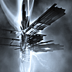

Forums galactiques > Assemblée Galactique : diplomatie officielle > Encyclopedia Galactica
Pages : 1
| Gabriel Fore Respect diplomatique : 202  21/12 ETU 22:22 | Score : 10 Détails "La pensée ne doit jamais se soumettre"
Commandant, Commandeuse, Commandeur, Commandante, Ministre, Maire, President, Presidente, Homme, Femme, Dragon bleu, Dragonne Bleu, Ent nain, Anthropomorphe, Forme de vie basé sur le carbone, Mutant et Mutante de tout espéces ; Le chaos régne dans la galaxie. Je sais que cette déclaration pompeuse peut surprendre au premier abords, voir paraitre sortit d'un esprit fous ou marginale ; et bien que j'ai quelque fois des doutes, je vous prie de croire qu'il n'en ai rien. La galaxie est en proie au chaos. A l'entropie la plus terrible qu'il ne puisse jamais exister : A ce que l'on appelle couramment l'obscurantisme et qui a déjà detruit bien des civilisation avant la notre. La valse des pouvoirs éreintent même le plus passioné des diplomate. Les lois ne sont pas respecté, non pas a cause d'un manque de volonté, mais a cause de pire : Elle ne sont simplement pas connu. Les alliances politique pour les un, militaire pour les autres, humanitaire et que sais-je encore se font et se défont dans un perpetuelle mouvement de reflux des océans. L'histoire se perd dans les alliances, contre alliance, dans l'univers compliqué que forme la pensé humaines ; et pendant ce temps, moi, mes administré, tout les peuples de la galaxie levons les bras et essayons de nous accrocher a quelques visages famillier, a quelques nom connu. L'objectivité devient un bien de plus en plus rare tandis que les president fantoches ou dictateur prennent et reprennent les rennes du pouvoirs . C'est pourquoi je propose ici la création d'une encyclopédia galactique, seul rempart face aux ouragans de ténébres qui menace de nous engloutir, seul mur possible face a la dictature et a l'infammie. Cette encyclopedie aurait pour but de réunir "dans la plus grande objectivité possible" les informations diverse venant de toute la galaxie, de la localisation des planètes au but et programmes des parties, en passant par les lois, les fonctions de certain haut personnage ou les lois. Pour garantir sa neutralité, elle serait comunautaire, sous le contrôle de la fondation de l'encyclopedia ; tout le monde pouvant proposer son projet d'article a un commité composé des plus éminente personnes de chaques instutions. Soyons clair : Il n'est pas question de refaire une chronologie, ou de refaire les lois (mais donner un lien vers le lieu ou elles ont été promulgué aiderait beaucoup) mais d'assurer un simple dépositoire de connaissance simple et concis sur ce qu'il se passe, ou ça se passe mais surtout pourquoi ça se passe a un moment T. L'encyclopedia serait disponible ici et sur simple demande aux membres du comité, sans restriction d'aucune sorte. Libre pour tous ; voilà ma devise, certe utopique, mais que je considére comme faisable. Merci ; Gabriel Fore. | ||
| yable Respect diplomatique : 250  21/12 ETU 22:30  | Score : 0 Détails Chers commandants,
Voila une entreprise plus que louable, et je souhaite qu'elle réussisse, car bien que j'ai perdu foi en la politique, la vérité est pour moi d'une importance cruciale. Le passé s'il est connu permet d'éviter bien des erreurs inlassablement répétées. C'est pour cela que je vous mets en garde : une telle expérience a déjà été tentée, mais certains ont abusés de ce pouvoir pour faire passer leur propagande, complètement fausse et trafiquée, pour discrédibiliser leurs ennemis et ainsi entammer une guerre sans risques de voir l'ensemble de la galaxie se liguer contre eux. Je vous souhaite cependant bon courage dans votre entreprise ! Cordialement, yable. | ||
| Gabriel Fore Respect diplomatique : 202 21/12 ETU 22:47 | Score : 1 Détails Merci yable pour votre réponse.
Sans vouloir tomber dans le pompeux ou dans les généralité, c'est pour avoir une telle neutralité de point de vue que je pense que seul une institution basé sur le comunautarisme aurait la capacité d'eviter toute les embuches malencontreuse qui pourrait se trouver sur sa route. Nous savons qu'en politique, la neutralité d'un homme est fondamentablement impossible ; même moi, je ne peux me faire confiance sur ce sujet. Seul un commité "d'expert", au sens large, peut assurer une objectivité intrinséque. C'est pourquoi il me faut plusieurs choses, desquelles : - Le soutient du gouvernement actuelle et des ligues sur la neutralité absolue de point de vue que devrait afficher l'encyclopedia. - L'organisation de vote démocratique pour le choix des membres du comité, en sachant que toute les minorité devront être representé et que le commité a un but rejetationnelle : il faut avoir la majorité absolue pour faire passer un article. - L'aide de la cour intergalactique de la justice pour son extraordinaire experience en ce qui concerne la neutralité et pour aider a l'organisation interne de la fondation. C'est cela que suis venu soumettre a votre aprobation. Merci ; Gabriel Fore. | ||
| AlphonseHubert Respect diplomatique : 690  22/12 ETU 01:07 | Score : 3 Détails Gabriel Fore a dit : "Commandant, Commandeuse, Commandeur, Commandante, Ministre, Maire, President, Presidente, Homme, Femme, Dragon bleu, Dragonne Bleu, Ent nain, Anthropomorphe, Forme de vie basé sur le carbone, Mutant et Mutante de tout espéces ;"
Et les castor lapons, alors ? C'est du poulet ? Après cette brève parenthèse, commandant, je ne puis que vous féliciter des intentions plus que louables de votre projet. Effectivement, l'obscurantisme et l'inculture sont des maux qui rongent Galaxie, encore qu'on pourrait les considérer comme subordonnés au mal fondamental qui les cause et que constitue l'inégalité économique. Néanmoins, vous avez mon entier soutien dans votre entreprise. Cependant, je suis en désaccord avec votre théorie de l'objectivité. Ainsi, je ne pense pas que l'objectivité s'atteigne par une addition de points de vue divers dans lesquels on choisirait à la majorité le point de vue officiel. Au contraire, je pense que l'objectivité s'atteint par la plus grande subjectivité, c'est à dire qu'au contraire de vouloir présenter un savoir unique et éternellement vrai, il faut laisser s'exprimer des points de vue divergents et donner aux commandants les clefs de compréhension leur permettant de se forger, rationnellement, un avis personnel. Ainsi, il me semble plus pertinent d'indiquer clairement de qui provient tel ou tel article, si les commandants ont l'honnêteté de se déclarer partisans et de ne pas chercher à se draper dans le manteau aussi blanc que mensonger de l'objectivité. On pourrait ainsi proposer des articles contradictoires sur des sujets qui font débat ? Ou bien veiller à présenter tous les avis divergents lorsqu'il y en a ? Autrement, si l'on présente une version "officielle", estampillée "neutre" de l'Histoire, nous risquons de dériver vers une société technocratiques où le savoir est monopolisé par des "comités d'experts" aux dépens de la réflexion aboutissant au choix de chacun. Quel que soit la formule choisie, je serais bien entendu absolument ravi de travailler, si vous le souhaitez, à la réussite de cette entreprise, si merveilleusement compatible avec les projets de l'AST ! | ||
| yable Respect diplomatique : 250 22/12 ETU 01:33 | Score : 1 Détails Une fois n'est pas coutume, je suis d'accord avec le commandant AlphonseHubert sur ce point là : si tous les avis sont diffusés, chacun pourra se faire sa propre opignon.
L'avantage de ce projet devient alors le fait que les redondances (si fréquentes dans les débats) seraient évités et au lieux d'avoir 15 pages de discours inutiles, nous pourrions avoir quelques textes (long, peut être), mais où seraient exposés l'ensemble des avis, sans répétitions inutiles. C'est un projet que de nombreuses personnes soutiennent (tout du moins dans l'idée), car c'est un des nombreux points sur lesquels la plupart des partis politiques étaient d'accord (l'éducation, la culture), donc cela n'a pas du changer beaucoup. | ||
| Gabriel Fore Respect diplomatique : 202 22/12 ETU 11:07 | Score : 1 Détails Effectivement, l'encyclopedia doit s'adapter a la vision du plus grand nombre ; et si la neutralité ne peut être atteint que par plus de subjectivité, elle pourra alors de ce fait integrer des morceaux choisie de partisanerie primaire. Mais je maintiens qu'il faut une certaine neutralité, du moins dans certains article. Le but est d'être simple et concis, et non pas de s'appuyer sur des visions différentes de l'univers, antinomique et rébarbative, ou de propager une seul vision au détriment des autre. Un article neutre pour chaque sujet, donc, et un ou plusieur(s) article(s) annexe(s) presentant le point de vue de chaque personnes et insitutions en présence pourront être fait. Comme cela, chaque droit de parole pourront être respecté, tout en gardant en vue le principal but : La simplicité et l'organisation.
Le tout étant sous contrôle d'une institution entierement neutre, la fameuse "fondation". Mais tout cela, ce sont des des petits points de détails ausquelles nous pourrons toujours discuter une fois que la Fondation, et son but de savoir universelle, sera effectivement reconnu par le gouvernement en place et les principal ligue. Merci pour votre soutien et votre aide ; Gabriel Fore. | ||
| Commandant Kerstan Respect diplomatique : 126  22/12 ETU 11:39 | Score : 0 Détails "Commandant,
Tout d'abord, félicitation pour votre initiative. C'est un projet fort louable et de grande envergure, ce qui est tout à votre honneur. Ensuite, en tant que membre du Gouvernement, je reconnais la Fondation et son but, profitable et important pour la galaxie. Je pense que mes collègues gouvernementaux seront du même avis que moi, vous pouvez donc considérer avoir notre soutiens dans votre entreprise ! Je suis certain que l'ULG vous reconnaitras et vous soutiendras aussi, mais je laisse le soin à l'un d'eux de s'exprimer ici. Bonne chance pour la suite. Cordialement, Kerstan. | ||
| Crimson Respect diplomatique : 18  22/12 ETU 19:46 | Score : 0 Détails C'est une idée valable.
Je serais interessé a m'impliquer dans cette entrprise. | ||
| juju_01 Respect diplomatique : 34  22/12 ETU 19:48 | Score : 0 Détails En temps que membre de l'ULG, j'apporte tout mon soutien à cette initiative, et vous souhaite du courage.
| ||
| Devan Respect diplomatique : 93  22/12 ETU 19:49 | Score : 0 Détails C'est une idée admirable.
L'Agence Flower Power soutient ce projet avec ferveur. Nous pensons que notre rencensement est tout à fait compatible avec votre oeuvre. Un partenariat est sans doute envisageable? Respectueusement, Devan | ||
| Vlad Ivostock III Respect diplomatique : 61  22/12 ETU 20:34 | Score : 1 Détails Si l'inspiration vous manque, je vous autorise à reprendre tels quels des articles d'Ultremag, qui sont des documents d'une objectivité remarquable.
| ||
| Gabriel Fore Respect diplomatique : 202 22/12 ETU 23:43 | Score : 3 Détails Tout d'abord, j'aimerais remercier tout les commandeurs qui m'ont répondu pour tout leurs encouragement et surtout pour le soutien qu'ils m'apportent, sans lequelle je n'aurais rien pu faire. Merci ;
Tout les bras seront évidemment bien acceuillis. Sans vouloir trop me lancer, l'encyclopedia se rapproche notamment de l'agence des Flower Power en ce qui concerne la non violence, et du minstére de la justice pour ce qui est de la neutralité, bien qu'elle n'a pas pour but et n'aura jamais pour but de former un partie, quel qu'il soit. Elle est là pour regrouper le savoir brut, les connaissance objectives et tout ce qui fait défaut actuellement dans cette galaxie ; mais nous, et par la même je, serions plus qu'honoré de travailler en commun avec ces deux honorables institutions, avec l'état, les guildes - a partir du moment que la neutralité de point de vue soit respecté, évidemment - ainsi qu'avec toute personne proposant de l'aide, que ce soit régulier ou juste pour une fois. Bien qu'il manque encore quelque voies importantes pour officialiser parfaitement la chose, je pense personnellement qu'il y en a assez pour commencer le long travail de defriche. Bientôt, et parce que la Fondation a un but universelle, je mettrais a débat une consitution de ladite Fondation, fixant ses rêgles, ses limites et surtout mettant bien a jour son but suprême de collecteur et de distributeur d'information au travers de l'encyclopedia. Si elle est accepté, alors pourrons nous commencer cette ouvrage exemplaire de manière publique et formelle. Pour l'instant, je ne peux que conseiller a tout ceux qui veulent m'aider a me contacter par communication personnelle. Merci ; Gabriel Fore. PS : Je remercie bien evidemment Vlad Ivostock III pour sa proposition et je ne manquerais pas d'utiliser ses archives, puisqu'il m'y invite si poliment. Mais je crains fortement de mettre en péril la neutralité de l'entreprise si je les reprennais "tel quel", comme vous le laisser si gentiment supposer. Jamais l'encyclopedia ne rendrat une information sans que le comité ai longuement débattu sur la chose, ou en tout cas ai donné son accord, même purement formel. | ||
| Gabriel Fore Respect diplomatique : 202 23/12 ETU 08:39 | Score : 1 Détails Comme je crois que ce qui n'a pas été mis clairement sur le papier ne vaut rien, voici la constitution, première version.
Preambule : La Fondation a pour but la recherche, la transmission et la vérification de l'objectivité du savoir, sous toute ces formes. Elle n'a pas un but millitaire, ni commercial, et encore moins un but politique ; ses buts sont croisé avec ceux de l'encyclopedia galactica, qu'elle supporte et anime. Une telle organisation basé sur la bonne volonté pourrait surprendre. Mais nous ne sommes pas là pour formé une armée bien dirigé, non plus pour nous perdre dans les allées torteuse des partie politique ; nous sommes là pour faire vivre un mode de pensée ou chacun peut apporter son quelque chose (le nom d'une planète, une forme de vie, des information sur l'histoire lointaine). Ceux qui ne sont pas d'accord n'ont qu'a partir de suite. Article 1 : La Fondation est l'institution materielle qui s'occupent de l'encyclopedia galactica. En tant que telle, elle sert le savoir pur et brut. Elle est entièrement neutre, sous touts points de vues autres que celle concernant l'acquisition de connaissance, l'enrichissement de l'encyclopedia galactica ou sa propre survie. Article 1' : La Fondation est composé de commandant ayant une aspiration a la vérité, quel qu'elle soit. Il peuvent être d'origine diverse, de localisation diverse, appartenant a des guilde diverse, mais tous doivent avoir en tête l'unicité qui les relie ensemble. Article 1'' : La Fondation n'est pas contrôlé par un pouvoir centrale, ni par une seul personne ou groupe de. Elle est entiérement communautaire, toute personne voulant y entrer peut le faire, de même que toute personne voulant quitter la Fondation peut le faire. Elle doit neanmoins suivre la constitution, chaque commandant décidant avec les autres de ce qui serait le mieux pour l'encyclopedia ou la Fondation. Une exeption est le titre de Maire de la Constitution, un titre purement prestigieux ne garantissant aucun pouvoir mis a part ceux stipulé dans l'article suivant. Article 1''' : Le Maire est nommé par suffrage universelle entre les membres de la Fondation et exerce ses fonctions jusqu'a ce que ces même membre décident de le renvoyer et de nommer un autre. Son seul pouvoir est celui de, en cas de faute extremement grave envers l'esprit même de la Fondation et de la connaissance, virer un autre membres de la Fondation. Ce pouvoir n'est pas a prendre a la légére, et ne devrait être utiliser qu'en cas d'extreme recours. Un commandant ayant plus d'une fois utilisé ce droit devrait être surveillé attentivement. Article 2 : En AUCUN cas les aspiration, idée et prejugé politique des membres de la Fondation, du comité ou des rédacteurs ne pourra impliquer la Fondation. La Fondation est totalement neutre, indépendante des courant politiques même si elle peut, par caractére ou pour completer l'encyclopedia, se rapprocher de certaine guilde. Elle ne prend jamais position, non plus qu'en tant que personne morale elle puissent donner des conseilles. Les membres de la Fondation peuvent par contre tout a fait avoir des opinions politique différent, a partir du moment ou il font bien la distinction entre les leurs et ceux de la Fondation. Article 2' : Les membres de la Fondation ne sont pas tenue a quitter leur ancienne guilde, a partir du moment ou il font preuve de toute la distinction demandé dans l'article 2. Article 3 : La Fondation travaille activement avec le comité, ainsi qu'avec les rédacteurs de l'encylopedia. Elle ne les contrôle cependant pas, pas plus qu'ils n'ont droit sur la Fondation ; mais un partenariat intense est préférable. Artcile 4 : Le comité est une assemblée de personne representant toute les minorité s'étant présenté. Une seule personne par partie est autorisé ; neanmoins, plusieurs personnes d'une même alliance peuvent être accepté dans le comité s'ils est prouvé qu'ils forment un courant radicalement différent dans ce même partie ; ils forment alors une minorité a part entière. Le choix de savoir si plusieurs courant s'est formé dans le même partie est porté a débats dans l'assemblée galactique. Article 5 : Sont nommé rédacteurs une personne qui a au moins écrit un article, dépéche ou partie de dépéche importante de l'encyclopedia. Les rédacteurs peuvent faire partie de la Fondation, et vice versa. Article 6 : Une personne de la Fondation, un rédacteur ou un membre du comité, voir un commandant qui a servie exeptionellement le savoir peut demander la protection de la Fondation, au nom de l'encyclopedia galactica. Il va sans dire que cette demande ne devrait être faite qu'en cas extremement grave, lorsque la destruction complete parait inevitable. Les membres de la Fondation sont tenue et prier de le proteger, au nom de la protection du savoir contre la barbarie de tout les temps. Article 7 : Le processus d'acceptation des articles commencent lorsqu'un rédacteur remet au comité un article, qui est alors soumis a débat jusque ce que tout les membres du comité se mettent d'accord. A aucun moment la Fondation ne contrôle ce processus. Article 7' : Une exeption sont les article annexe, qui eux peuvent être d'une point de vue subjectif s'il le faut et qui passent outre le comité. Dans ce cas, cela doit être précisé. Article 8 : Sont en territoire de la Fondation toute les terres donné a la Fondation par ses membres ou non. Ces territoire sont neutre, et n'ont pas un quelconque but millitaire ou politique. Ils sont la representation de l'encyclopedia sur le plan materielle. Article 8' : Ces Territoires sont donné et peuvent être repris. C'est pourquoi ce don ne doit pas être fait a la légère. Dans l'absolu, cela veut dire qu'ils sont donné a un membres de la Fondation qui s'occupera ensuite de sa répartition avec les autres membres de la Fondation. N'importe quelle personne peut être prise pour cela, bien qu'il soit peut être préférable pour des raison de sécurité de le faire a des membres connu de la Fondation. Article 8'' : En aucun cas une planète a problème, entendant par là une planète disputé, ne pourrat être accepté par la Fondation sauf si tout les parties en présence se mette d'accord pour ceder le territoire. Article 8'''t : Le don de territoire a la Fondation peut être de deux types : Celle d'un membre envers la Fondation, et celle d'un exterieur envers cette même Fondation. Dans tout les cas, les planètes donné a la Fondation sont redistribué envers ses membres selon les besoin du moment et peuvent - je dirais même devrais - donc faire l'objet d'échange intense. Un membre qui quitte la Fondation verrat bien evidemment les planètes redistribué en sa faveur retiré. Article 9 : Peut être déclaré "Hostile" toute personne, organisation ou groupe de, qui se sont déclaré hostile au projet de la Fondation ou dont les actes mettent gravement en peril ladite Fondation. Cela veut dire que tout membre doit se montrer particulièrement prudent envers cette association. Ce N'EST PAS UN DECLARATION DE GUERRE, car la fondation n'a aucune valeur millitaire autre que celle necessaire pour assurer sa survie. Article 10 : Le comité contrôle l'encyclopedia, tandis que les rédacteur la construit. La Fondation la soutien, l'anime et la represente. La présente constitution peut être réviser s'il est prouvé qu'elle est inapte envers la Fondation et ce qu'elle represente. Etant donné la situation, je suis Maire de la Constitution encor pour un temps. De toute façon, étant seul membre pour l'instant, j'arrive facilement a la majorité unique. | ||
| Necrid Respect diplomatique : 26  23/12 ETU 08:45 | Score : 0 Détails Désirez-vous fusionner avec la Confédération de la Nouvelle Fondation dont je suis le Représentant ?
| ||
| Gabriel Fore Respect diplomatique : 202 23/12 ETU 11:26 | Score : 1 Détails Merci, mais non merci. J'admet qu'il y a une ressemblance au niveau des mots, mais elle s'arrétte bien (mal?)heureusement là. La Fondation a une constitution maintenant ainsi qu'un but difficilement concilliable avec aucune autre organisation.
Mais je serais bien evidemment fier d'avoir votre soutien, sous quelque forme que ce soit. Bonzaï ; Gabriel Fore. | ||
| Gabriel Fore Respect diplomatique : 202 23/12 ETU 19:20 | Score : 0 Détails En ces periodes troublée, j'ai la fierté d'annoncer la mise en place des premières institutions de l'encyclopedia.<HorsRP> Vu la preparation des fêtes de noêl, l'Encyclopedia est pour l'instant en phase de bloquage, mais elle existe et c'est ça l'essentiel. Je serais bien sûr ravie de discuter par MP pour toute les questions, reclamation et autre indesirable.<HorsRP> Que la vérité nous guident tous.
Merci ; Gabriel Fore. PS: J'ai failli oublier de vous donner l'adresse du siège de l'encylocpedia ;). La voici http://apocalypsis.wikicities.com/ | ||
| genesys Respect diplomatique : 0  27/12 ETU 15:26 | Score : 0 Détails Bonjour,
Je trouve l'idée de Gabriel Fore assez formidable. Je serais heureux de l'aider et de faire partie de sa fondation. | ||
| Necrid Respect diplomatique : 26 27/12 ETU 18:26 | Score : -1 Détails Comme Maire de Terminus et Haut Représentant de la Confédération de la Nouvelle Fondation, je propose aux encyclopédistes de se réunir sur la planète Terminus, située dans le secteur d'Anacréon, à la périphérie de la Galaxie.
Cordialement, Commandant Necrid. |
Pages : 1
Forums galactiques > Assemblée Galactique : diplomatie officielle > Encyclopedia Galactica